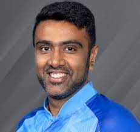
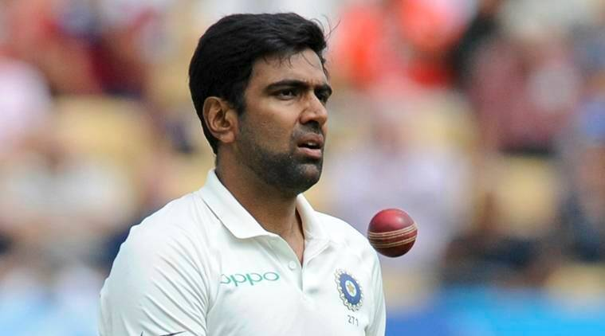

Ravichandran Ashwin
Ravichandran Ashwin burst onto the scene with his smart and street-smart exploits in the shorter form of the
game in the IPL, but since his Test debut against West Indies in 2011, Ashwin has made it a habit to pick up
wickets, especially in dry and dusty conditions that support turn. He has made a name for himself in the shorter
formats of the game, more so in T20 cricket where his accuracy and shrewdness has made him a dependable bowler.
He has managed to fill in the boots of Harbhajan Singh and then some, and has become India's premier bowler in
the subcontinent.
A consistent season at the domestic level made him stand out and got Ashwin a contract with the BCCI, in
addition to leading Tamil Nadu to victory in the domestic one-day trophy in 2009. When Harbhajan opted out of
the first two games against South Africa at home in early 2010, Ashwin was called in as his replacement. Alas he
did not get his coveted India Test cap. Impressive performances for the Chennai franchise in the subsequent
edition of the IPL meant that he was always knocking on the door and an extended chance arrived in June 2010
when India decided to experiment on their tour to Zimbabwe for a tri-series.
After going constantly in and out of the team, the wily off-spinner was picked in the Indian squad for the 2011
World Cup in the Indian subcontinent. However, he was played for only two games including the quarter-final and
omitted for the final. Ashwin has been consistent in the opportunities that he has got so far and has taken over
as the lead spinner in the Test side after the selectors dropped Harbhajan for the Test series against West
Indies in 2011. He formed a successful partnership with left-arm spinner Pragyan Ojha, especially in Tests in
India.
Ashwin as a Batsman
.jpg)
|
Test |
ODI |
T20 |
IPL |
| Matches |
90 |
113 |
65 |
184 |
| Innings |
128 |
63 |
19 |
75 |
| Runs |
3103 |
707 |
184 |
550 |
| Average |
27.46 |
16.44 |
26.29 |
13.48 |
| Strike Rate |
54.42 |
86.96 |
115.0 |
117.64 |
| Highest Score |
124 |
65 |
31 |
50 |
| Not Out |
15 |
20 |
12 |
27 |
| 100s |
5 |
0 |
0 |
0 |
| 50s |
13 |
1 |
0 |
1 |
| 4s |
354 |
60 |
17 |
51 |
| 6s |
20 |
7 |
4 |
21 |
Ashwin as a Bowler

|
Test |
ODI |
T20 |
IPL |
| Matches |
90 |
113 |
65 |
184 |
| Innings |
170 |
111 |
65 |
181 |
| Balls |
23963 |
6141 |
1452 |
3900 |
| Runs |
11107 |
5058 |
1672 |
4534 |
| Wickets |
463 |
151 |
72 |
157 |
| BBI |
7/59 |
4/25 |
4/8 |
4/34 |
| BBM |
13/140 |
4/25 |
4/8 |
4/34 |
| Economy |
2.78 |
4.94 |
6.91 |
6.98 |
| Average |
23.99 |
33.50 |
23.22 |
28.88 |
.jfif)
Awards and Achievements
- ICC Cricketer of the Year: 2016
- CEAT International Cricketer of the Year: 2016-17
- ICC Men's Player of the Month: February 2021
- Indian Premier League Champion: 2010, 2011